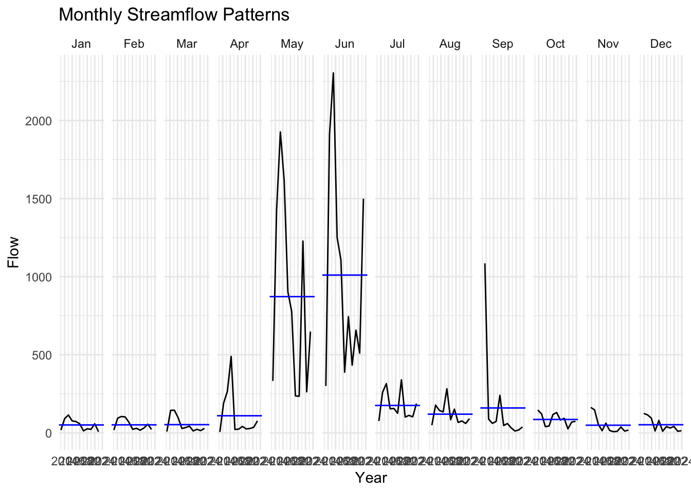

Attaching package: 'zoo'
The following objects are masked from 'package:base':
as.Date, as.Date.numeric
library(lubridate)library(tsibble)
Registered S3 method overwritten by 'tsibble':
method from
as_tibble.grouped_df dplyr
Attaching package: 'tsibble'
The following object is masked from 'package:zoo':
index
The following object is masked from 'package:lubridate':
interval
The following objects are masked from 'package:base':
intersect, setdiff, union
library(feasts)
Loading required package: fabletools
Attaching package: 'fabletools'
The following object is masked from 'package:yardstick':
accuracy
The following object is masked from 'package:parsnip':
null_model
The following objects are masked from 'package:infer':
generate, hypothesize
library(plotly)
Attaching package: 'plotly'
The following object is masked from 'package:ggplot2':
last_plot
The following object is masked from 'package:stats':
filter
The following object is masked from 'package:graphics':
layout
# Example: Cache la Poudre River at Mouth (USGS site 06752260)poudre_flow <-readNWISdv(siteNumber ="06752260", # Download data from USGS for site 06752260parameterCd ="00060", # Parameter code 00060 = discharge in cfs)startDate ="2013-01-01", # Set the start dateendDate ="2023-12-31") |># Set the end daterenameNWISColumns() |># Rename columns to standard names (e.g., "Flow", "Date")mutate(Date =yearmonth(Date)) |># Convert daily Date values into a year-month format (e.g., "2023 Jan")group_by(Date) |># Group the data by the new monthly Datesummarise(Flow =mean(Flow)) # Calculate the average daily flow for each month
# A tsibble: 6 x 2 [1M]
Date Flow
<mth> <dbl>
1 2013 Jan 18.1
2 2013 Feb 18.0
3 2013 Mar 8.21
4 2013 Apr 5.94
5 2013 May 333.
6 2013 Jun 300.
#2: Plotting the time series
flow_plot <-ggplot(poudre_flow, aes(x = Date, y = Flow)) +geom_line(color ="blue") +labs(title ="Cache la Poudre River Streamflow", x ="Date", y ="Flow (cfs)") +theme_minimal ()ggplotly(flow_plot)
#3: Subseries plot
gg_subseries(poud_tbl) +labs(title ="Monthly Streamflow Patterns", y ="Flow", x ="Year") +theme_minimal()
Plot variable not specified, automatically selected `y = Flow`

#I noticed very high streamflow levels in May and June. This could be caused by spring precipitation, snowmelt, or glacial melt when temperatures begin increasing after winter. I also noticed that streamflow is very consistently low from October to March, which could be consistent with cooler temperatures preventing melting of snow, as well as less precipitation in general. The subseries compares streamflow taken at the same time each year for 10 years, so that we can compare differences from year to year in streamflow. Things like flooding can be seen, and in this subseries there is a possible flood in September within the 10 year period.
#Seasonal streamflow has stayed relatively the same across the data, which spans over a 10 year period. see small patterns of lower streamflow in 2020 versus higher streamflow in 2014-2016. Seasonal portrayal of the data is the most effective due to the seasonal changes of streamflow, which increase and decrease in relation to snowmelt and rainfall.
#Exercise 22:
#Modeltime 12 month prediction:
library(modeltime)library(tidymodels)library(timetk)poud_pred_tbl <- tsibble::as_tsibble(poudre_flow) |>as_tibble() |>mutate(date =as.Date(Date), Date =NULL)
rsq_val <-lm(real_flow ~ predicted, data = comparison) %>%glance() %>%pull(r.squared)print(rsq_val)
[1] 0.8249846
#The model explains 82% of the variance, or is 82% accurate in comparison to the actual data.
#Predicted vs Observed Plot
ggplot(comparison, aes(x = real_flow, y = predicted)) +geom_point(size =3, color ="lightblue") +geom_smooth(method ="lm", color ="blue", se =FALSE) +geom_abline(intercept =0, slope =1, linetype ="dashed", color ="black") +labs(title ="Predicted Versus Observed Streamflow", x ="Observed (cfs)", y ="Predicted (cfs)") +theme_minimal()